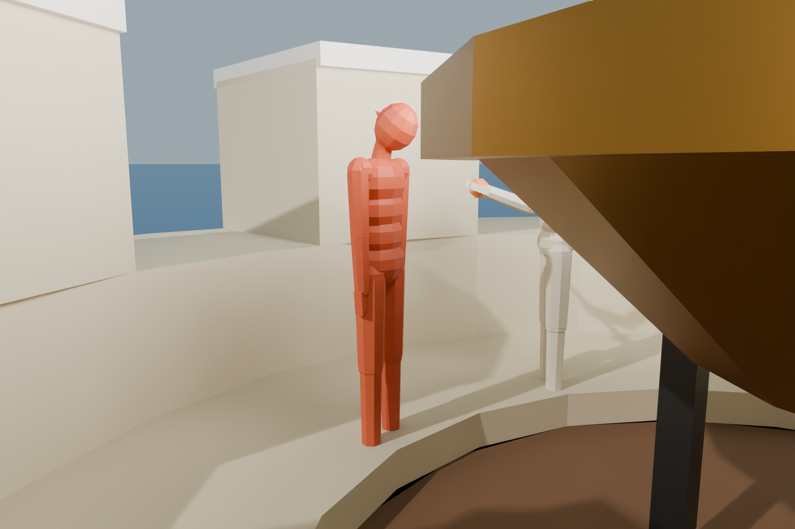
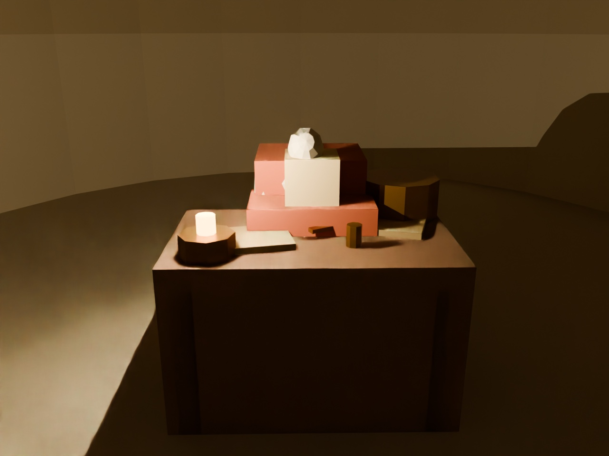
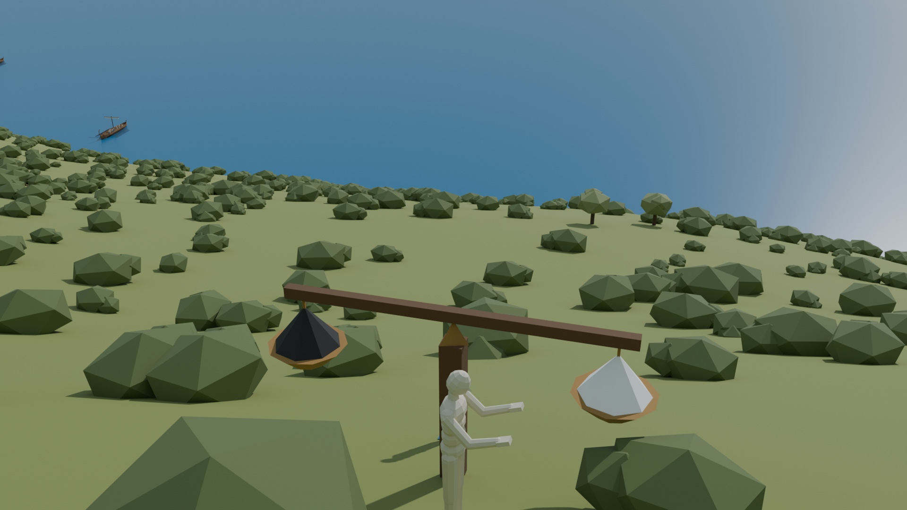
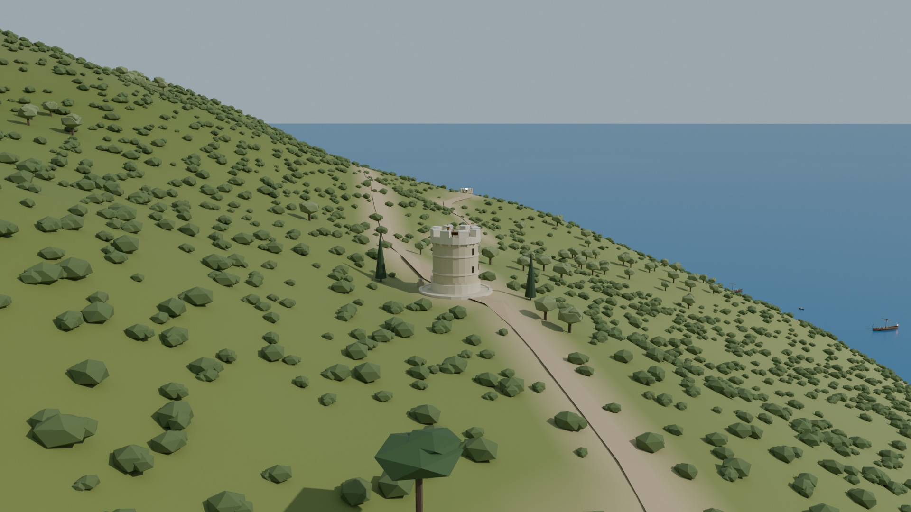
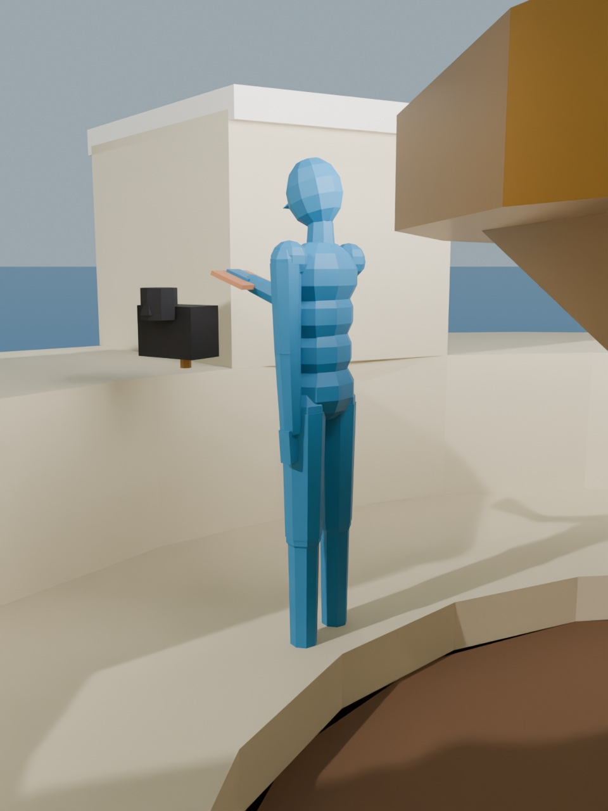
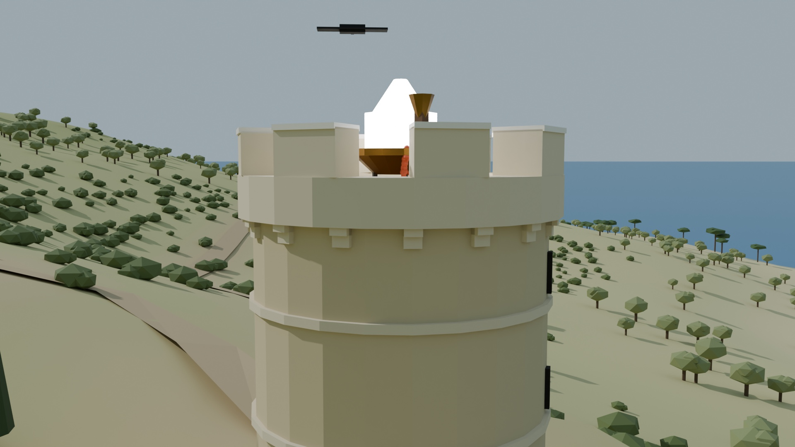
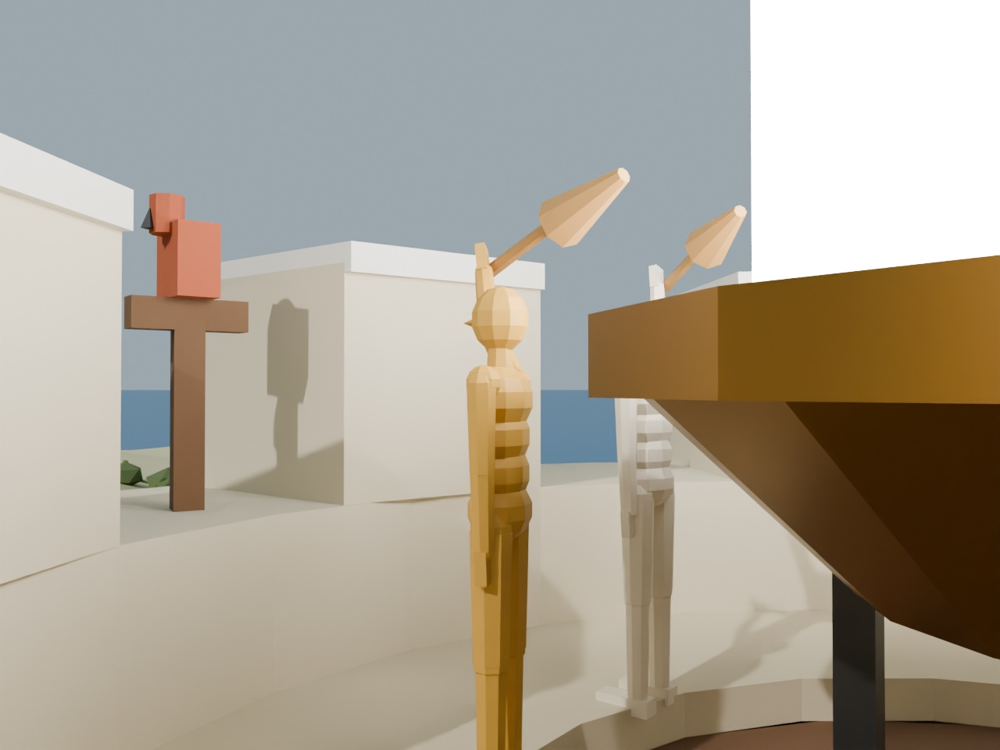

An illustrated chronicle of the coastal watchtowers of Paxos — and the proof, nine columns long, that no defense rite can promise both to never divide the fleet and to always act in time.
After M. J. Fischer, N. A. Lynch & M. S. Paterson, "Impossibility of Distributed Consensus with One Faulty Process," JACM 32, 2 (April 1985), 374–382. The complete proof, retold.
Most military prophecies are famous for their ambiguity. This one is famous for having none. It was delivered by three scholars of strategy — Φίσερ, Λίντς and Πάτερσον — in the form of a mathematical demonstration, nine columns long, which the commanders of the coastal watchtowers at first refused to believe, and later carved into the living rock above the harbor.
I have translated the proof in full. It is one of the shortest and most consequential documents in this series, casting its shadow across every later volume. Readers of Volumes IV through IX who wonder why each island council is so careful to promise only that it will eventually decide, and only when the weather is fair, will find the reason here.
— The Translator

The island of Paxos rises from the sea in steep limestone bluffs. To protect its sheltered coves from sudden sea raiders, the islanders built watchtowers high upon the coastal headlands: North Bluff, East Cape, South Crag, and West Point. Each tower overlooks a different quarter of the horizon, and each commands a squadron of slim wooden war galleys moored in the cove below.
There was no supreme admiral on the island. Authority was held equally by the guards stationed on the towers. When strange sails appear on the twilight sea, the watchtower that spots them first must inspect the invaders and make an initial judgment:
Because the island's naval forces are split among separate coves, they must act strictly in unison. If half the towers signal to attack while the others bar their gates, the attacking galleys row out alone and are surrounded and sunk piecemeal. Whatever the towers choose, all must choose the same. A split verdict is annihilation.
The tower that first spots the fleet writes its assessment on slates and dispatches swift messenger ravens across the coastal headlands to every other watchtower. Other towers, upon sighting sails or receiving reports, dispatch their own ravens in turn. With perfectly tireless guards and clear weather, agreement is easy. Every guard exchanges his observations with his peers, and all sound their war-horns together.
But real guards grow exhausted beneath heavy helmets, suffer sunstroke on the rocks, or succumb to a stray arrow from a raider skiff. The three scholars proved that no defense rite, if it relies on messages carried by ravens on asynchronous flight paths, can tolerate even a single sleepy guard. They did not consider traitors or spies. They assumed that every messenger raven that is dispatched eventually arrives, and that no slate is ever broken. And still, the unannounced sleeping of one guard upon his parapet can prevent the coastal defense from ever sounding a signal.
Crucial to the proof is that the island's communications are completely asynchronous. Nothing is assumed about how fast a guard reads a slate or how long a messenger raven takes to battle through coastal headwinds and fog. Sudden gales buffet the birds, coastal updrafts force them to seek shelter, and thick sea fog frequently blankets the headlands. The watchtowers possess no synchronized water-clocks, so no defense rule may say: "if no raven has reached this tower by midnight, assume the sender is dead."1
Because there are no clocks and raven flight delays are unbounded, no guard can detect that another has fallen asleep. It is fundamentally impossible for a guard on North Bluff to tell whether his peer on South Crag has collapsed, or whether his raven is merely winging slowly through the dark sea fog.
The result applies even to the simplest decision. Each guard begins with an initial observation: a white pebble (Attack) or a black pebble (Defend). A waking guard commits to an action by striking a heavy bronze beacon-gong in his courtyard, which drops the harbor chain and cannot be un-rung. All guards who strike their gong must choose the same signal. For the purpose of the proof, the scholars required only that some waking guard eventually strike a gong — for if not even one can safely signal, the entire fleet remains frozen. The trivial rule where everyone always defends regardless of the threat is excluded by requiring that both outcomes be possible from different initial sightings.
The three scholars described the watchtowers in terms deliberately generous to the defenders, so that their impossibility theorem would bind as many defense rites as possible. A guard may keep as many notes as he likes on his chalk boards and execute any deterministic calculation. He may dispatch messenger ravens to all peers simultaneously. Slates and message capsules are never lost or corrupted. The only weapon granted to the weather is that the messenger ravens may take their time in flight through adverse winds and fog.
A defense network is an asynchronous system of N ≥ 2 watchtowers. Each watchtower p has an initial observation xp ∈ {0, 1} (Defend or Attack), an output gong yp with values in {b, 0, 1} starting un-struck (b), and an unbounded slate board for notes. Together these make up the tower's state. States in which the gong holds 0 or 1 are decision states. A guard acts deterministically, according to a fixed rulebook, and the rulebook cannot un-strike a gong once sounded.
Slates are pairs (p, m): a destination watchtower and a written message. All slates dispatched but not yet delivered are in flight along the coastal flight paths — a collection (a multiset) of message cylinders carried by ravens. The network supports two operations:
The flight paths deliver slates nondeterministically, subject to one fairness condition: if receive(p) is attempted infinitely often, every slate sent to p is eventually delivered. In particular, a raven may be buffeted by coastal gales or held back by sea fog a finite number of times even while carrying an urgent slate.
A configuration is the state of every watchtower together with the slates currently in transit along the paths. A step is taken by one watchtower p: the guard performs receive(p), obtaining some slate m (or ∅), and then, depending on his state and m, updates his chalk board and sends a finite set of slates to other towers. Because guards are deterministic, the step is fully determined by the event e = (p, m) — the delivery of slate m to tower p — and we write e(C) for the resulting configuration. The empty event (p, ∅) can always occur, so any waking guard can always take another step. A schedule is a sequence of events applied in turn; its steps form a run; and any configuration reached from the initial sighting is accessible.
Suppose that from a configuration C the schedules σ1, σ2 lead to configurations C1, C2. If the sets of watchtowers taking steps in σ1 and σ2 are disjoint, then σ2 can be applied to C1 and σ1 to C2, and both lead to the same configuration C3.
The proof is direct: σ1 and σ2 involve separate watchtowers on separate headlands. A raven landing at North Bluff changes only North Bluff's board; a raven landing at South Crag changes only South Crag's board. They do not interact. It is the independence of separate coves from Volume I in military form.
A configuration has decision value v if some watchtower's gong has been struck for v.
A guard is awake (nonfaulty) in a run if he takes infinitely many steps, and asleep (faulty) otherwise. A run is admissible if at most one guard falls asleep, and every slate dispatched to a waking guard is eventually delivered. A run is deciding if some watchtower strikes its gong. A defense rite is totally correct in spite of one fault if it is partially correct and every admissible run is deciding.
No coastal defense consensus rite is totally correct in spite of one sleepy guard.
Assume, to the contrary, that some defense rite P is totally correct in spite of one fault. The three scholars set out their trap in two stages. First, show that there must be some initial arrangement of dusk sightings from which the fate of the island is not yet sealed. Second, show how the coastal fog and headwinds can schedule messenger ravens across the gorges so as to keep the watchtowers hovering forever on that knife-edge.
Let C be a configuration and V the set of decision values reachable from C. C is bivalent (in Suspended Vigil) if |V| = 2 — both Attack and Defend are still possible outcomes. C is univalent (a Sealed Verdict) if |V| = 1, and then 0-valent (locked to Defend) or 1-valent (locked to Attack) accordingly.

P has a bivalent initial configuration.

The second lemma is the heart of the impossibility. It proves that from any undecided configuration, no single raven's arrival can be forced to settle the verdict: the weather can always hold back that raven until a moment when delivering its message capsule leaves the watchtowers still undecided.
Let C be a bivalent configuration of P, and let e = (p, m) be an event applicable to C. Let 𝒞 be the set of configurations reachable from C without applying e, and let 𝒟 = e(𝒞) = {e(E) | E ∈ 𝒞}. Then 𝒟 contains a bivalent configuration.

Case 2 reveals the fundamental flaw of any asynchronous protocol. The only way a single raven's arrival could definitively lock the island into Attack or Defend is if the choice depends entirely on which of two messages guard p unseals first. But the defense rite is sworn to work even if one guard sleeps. Therefore, the remaining watchtowers must be capable of striking their gongs while p is asleep — and their decision cannot depend on what p has not yet read. The other towers would have committed to a battle plan that, a moment later, could still be contradicted.
Any deciding run from a bivalent start must, at some specific step, transition from an undecided configuration to a decided one; that single step seals the fate of the fleet. The three scholars now proved that the coastal weather can always schedule messenger ravens so as to avoid every such step, while keeping the run completely admissible.
The weather builds the run in stages, starting from the bivalent initial sighting guaranteed by Lemma 2. It keeps a queue of all watchtowers in any cyclic order, and considers each tower's incoming messages in the order dispatched. Each stage ends with the watchtower at the head of the queue receiving its earliest pending raven capsule; that tower then moves to the back of the queue. In an infinite sequence of such stages, every watchtower takes infinitely many steps and receives every message capsule dispatched to it. The run is perfectly admissible: not a single guard has fallen asleep.
Suppose a stage begins at a bivalent configuration C, with watchtower p at the head of the queue and m its earliest pending message capsule (or ∅). Let e = (p, m). By Lemma 3, some bivalent configuration C′ is reachable from C by a sequence of steps whose final event is e. Those steps form the stage. Every stage begins and ends bivalent; every stage delivers a pending message; and no decision gong is ever struck. ∎

Notice the tragedy of the result. The run constructed by the scholars is not one in which a guard is struck dead. The mere possibility that one guard might fall asleep forces the rite to be willing to decide without him, and that willingness is what the weather exploits. No raven is lost; every message capsule arrives. Nor is the defense made to contradict itself: the watchtowers maintain Safety unconditionally — they never launch a divided fleet. It is Liveness, the guarantee that the galleys will ever launch at all, that cannot be preserved.3
Lest the coastal defenders despair completely, the scholars showed what can be accomplished if the failure is restricted to guards who were already asleep before the fleet was sighted. Suppose a strict majority of watchtowers are awake at sunset, and no guard falls asleep during the deliberations, though no one knows in advance which towers are silent. Let L = ⌈(N + 1)/2⌉.

There is a partially correct consensus rite in which all waking watchtowers always reach a decision, provided no guard falls asleep during deliberations and a strict majority are awake initially.
The three scholars were careful about what they had shown. A fundamental problem of coordinated defense cannot be solved in a totally asynchronous world. This does not mean coordinated defense is impossible in practice. It means the headlands must rely on richer physical realities — descriptions that bound how long a messenger raven takes in flight — and less stringent guarantees, such as deciding with probability one.
Between the announcement of the curse and its carving upon the rocks, progress was made along two vital paths:
Finally, the scholars noted a deeper shadow on the horizon. We have seen what honest fatigue and coastal mist can do to an alliance of watchtowers. But what if a commander is not asleep at all, but in the pay of an invading enemy fleet? That darker question — of traitorous admirals who send contradictory words to different peers — belongs to Volume III (Traitors Among Admirals).
| On the coastal headlands | In the paper (Fischer, Lynch & Paterson 1985) |
|---|---|
| Watchtower / guard | Deterministic process (automaton) |
| Dusk sighting / bronze gong | Input register xp / write-once output register yp |
| Flight paths, messenger ravens, coastal fog | Message buffer; adversarial asynchronous scheduler |
| Sleepy guard | Crash-stop (fail-stop) process that is never detected |
| No water-clocks | Fully asynchronous model: no bounds on delay, no clocks, no failure detection |
| Suspended vigil (both braziers level) | Bivalent configuration |
| The endless fair vigil | The admissible non-deciding run constructed from Lemma 3 |
| Coordinated fleet sortie | Distributed consensus / atomic transaction commit |
The FLP result is the foundational impossibility theorem of distributed computing. It explains why every practical consensus protocol relaxes one of its premises. Paxos (Volume IV), Viewstamped Replication (VI), PBFT (VII) and Raft (IX) are all always safe and live only under partial synchrony (Volume III): they use timeouts to suspect failures and elect leaders, and they may pause progress while the network is partitioned. Randomized protocols instead guarantee termination with probability 1. Neither "violates" FLP; both decline a promise that FLP proved cannot be kept.
The original paper this volume retells: